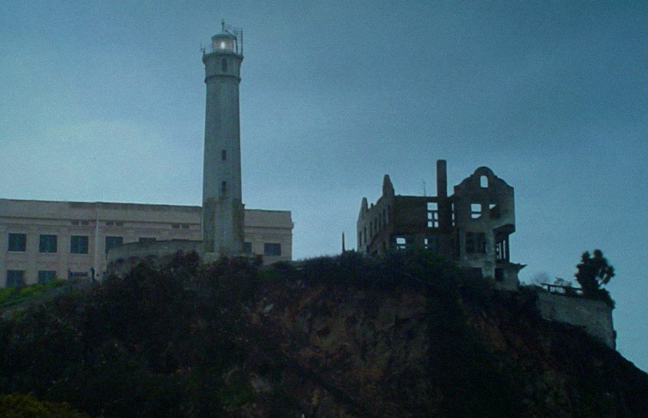

From voices, to footsteps, to the appearance of apparitions, Alcatraz is considered a very haunted location… Alcatraz was first discovered in 1775 by Spanish explorer Juan Miguel de Ayala. He named the island La Isla de los Alcatraces, meaning “island of pelicans.”
 As a result of the influx of people to San Francisco at the time of the California Gold Rush, construction of a fortress began by U.S. Army engineers in 1853 at what later became known as Alcatraz. Due to the higher rate of crime during the gangster era, Alcatraz began a makeover in 1934 to make it better suited for hardened criminals. Some of the best-known inmates who spent time at Alcatraz include Al Capone, Robert Stroud, (otherwise known as “The Bird Man of Alcatraz,”) Machine Gun Kelly, and Doc Barker of the Ma Barker gang. When operational costs became too high, Alcatraz closed its doors in 1963.
There have been numerous incidents of spirit happenings experienced by both guards and visitors to Alcatraz. Male voices and footsteps have been heard. People have seen apparitions, and some guests have experienced the smell of smoke. Both orbs and ghostly images have been captured on film. There have been several deaths at Alcatraz. Eight people were killed by inmates during Alcatraz’s time as a prison, along with five inmates who committed suicide. Fifteen people died from natural causes. Could any of these people be the ghosts of Alcatraz? Some people believe the spirits of two guards who were murdered in a shooting incident in 1946 still roam the grounds. Cell blocks A, B, and C are said to have paranormal activity. The laundry room and the hospital have also had reported spirit activity. C-Block is reputedly haunted by the spirit of former inmate Abie Maldowitz (nicknamed Butcher) who was murdered in the laundry room.